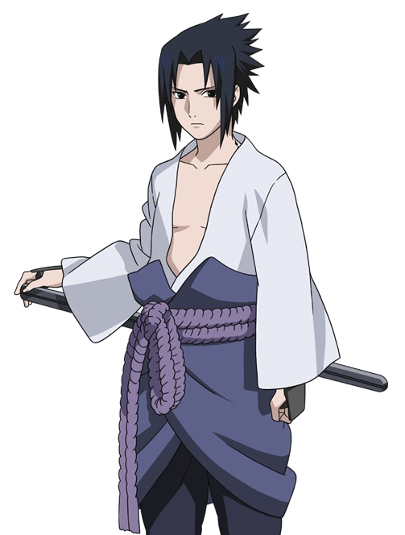

Саске Учиха (яп. うちはサスケ, Учиха Саске) — один из последних выживших членов клана Учиха из Деревни Скрытого Листа.
После того, как его старший брат Итачи вырезал весь их клан, Саске поставил перед собой жизненную цель отомстить за клан и семью, убив Итачи. Он попадает в Команду 7, когда становится ниндзя, и благодаря состязаниям со своим соперником и лучшим другом, Наруто Узумаки, начинает оттачивать свои навыки. Недовольный своим прогрессом, он покидает Лист, чтобы обрести силу, необходимую для осуществления мести. Годы, проведённые в поисках мести, стали невероятно взыскательными и неразумными, равно как и изолировали его от других, из-за чего он вскоре становится международным преступником. После того, как Саске сыграл одну из ключевых ролей в окончании Четвёртой Мировой Войны Шиноби, а Наруто смог избавить его от ненависти, он решает вернуться в Скрытый Лист и посвящает свою жизнь защите деревни и её жителей — таким образом, он становится известен под прозвищем "Поддерживающий Каге" (яп. 支う影, Сасаукагэ, Буквальное значение: Поддерживающая Тень).
Навигация
| 1 часть | 2 часть | Боруто |
|---|---|---|
| 150,8 см-153,2 см | 168 см | 182 см |
removeClass() - Удаление одного или нескольких классов из выбранных элементов
Back in 1985 Sculley turned down an appeal from Microsoft founder Bill Gates to license its software.Not long after this decision was the turning point for the company. Jobs revamped the computers and introduced the iBook (a personal laptop). He also started branching out into mp3 players (iPod) and media player software (iTunes). This was Jobs' best move yet. While computers are still an important part of Apple, its music related products (i.e. iPod and iTunes) have become the company's most profitable sector. Apple has also recently released the iPhone, a cellular phone, and the Apple TV. While Steve Jobs died October 5, 2011, Apple continues on with his legacy.
Во второй части, когда проходит перед этим 2,5 года, Саске заметно вырастает и становится более мускулистым. Он был впервые показан в белой рубашке с длинными рукавами похожую на ту, что носил Кимимаро, и меньшим символом Учиха на спине. Саске носит голубую ткань, начинающуюся с живота до колен, которая держится с помощью фиолетового пояса, как у Орочимару и его последователей, который в свою очередь поддерживает катану, темно-синие брюки и высокие черные ботинки. Также Саске носил черные наручи, которые покрывали его предплечья и растягивались до достижения верхних бицепс.
Саске — второй и младший сын Микото и Фугаку Учихи; они назвали его в честь Саске Сарутоби в надежде, что он однажды станет таким же сильным шиноби.[14] Саске рос в тени старшего брата Итачи, настоящего гения, которого многие из клана Учиха и жителей деревни постоянно сравнивали с Саске и его достижениями. Сам Саске обожал Итачи и никогда не упускал возможности провести с ним время. Несмотря на то, что Итачи приветствовал его компанию, позволяя Саске наблюдать за его тренировками, и брал его в лес на поиски приключений,[15] сам Итачи редко помогал Саске стать лучше как шиноби; когда тот просил его, он часто тыкал лоб Саске и обещал помочь ему в следующий раз. Это раздражало Саске, но не становилось причиной ухудшить своё отношение к брату.